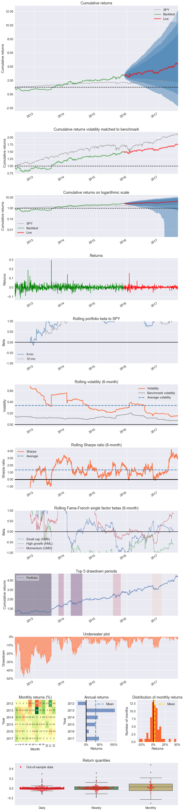

Single stock analysis example in pyfolio
Here's a simple example where we produce a set of plots, called a tear sheet, for a single stock.
Import pyfolio and matplotlib
import pyfolio as pf
%matplotlib inline
# silence warnings
import warnings
warnings.filterwarnings('ignore')
Fetch the daily returns for a stock
stock_rets = pf.utils.get_symbol_rets('FB')
Create a returns tear sheet for the single stock
This will show charts and analysis about returns of the single stock.
pf.create_returns_tear_sheet(stock_rets, live_start_date='2015-12-1')
Entire data start date: 2012-05-21
Entire data end date: 2017-08-22
In-sample months: 42
Out-of-sample months: 20
| All | In-sample | Out-of-sample | |
|---|---|---|---|
| Annual return | 32.8% | 32.9% | 32.6% |
| Cumulative returns | 343.7% | 172.7% | 62.7% |
| Annual volatility | 38.0% | 43.2% | 24.3% |
| Sharpe ratio | 0.93 | 0.87 | 1.28 |
| Calmar ratio | 0.61 | 0.61 | 2.38 |
| Stability | 0.92 | 0.89 | 0.88 |
| Max drawdown | -53.6% | -53.6% | -13.7% |
| Omega ratio | 1.20 | 1.18 | 1.29 |
| Sortino ratio | 1.50 | 1.39 | 2.09 |
| Skew | 1.89 | 1.73 | 2.12 |
| Kurtosis | 23.62 | 19.44 | 24.74 |
| Tail ratio | 1.11 | 1.04 | 1.02 |
| Daily value at risk | -4.7% | -5.3% | -2.9% |
| Alpha | 0.20 | 0.21 | 0.18 |
| Beta | 1.04 | 1.01 | 1.11 |
| Worst drawdown periods | Net drawdown in % | Peak date | Valley date | Recovery date | Duration |
|---|---|---|---|---|---|
| 0 | 47.90 | 2012-05-21 | 2012-09-04 | 2013-07-25 | 309 |
| 1 | 22.06 | 2014-03-10 | 2014-04-28 | 2014-07-24 | 99 |
| 2 | 17.34 | 2013-10-18 | 2013-11-25 | 2013-12-17 | 43 |
| 3 | 16.57 | 2015-07-21 | 2015-08-24 | 2015-10-19 | 65 |
| 4 | 13.68 | 2016-10-24 | 2016-12-30 | 2017-02-08 | 78 |
